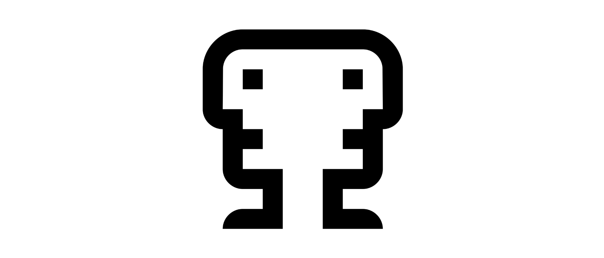

Over the past months I've been building Janus, a SSG (Static Site Generator) that takes a directory of posts written in Markdown and descriptions of "boards" (thematic collections of posts), then it "converts" the whole structure into a full HTML website with customizable styles, HTML templates for everything and aliases.
The website itself that you are reading is built on Janus.
You can read the full docs here on Github. It's easy to follow along and build your first website starting from the example blog.
I've made several attempts but I was never satisfied with the output and the codebase itself. The main difficulty was defining a blog structure that could get rid of multiple "chicken or the egg" and separation of responsibility problems:
"FIRST_BOARD".That's how I solved these problems:
This version is the result of the fouth attempt and I'd say I'm pretty satisfied with how things turned out this time.